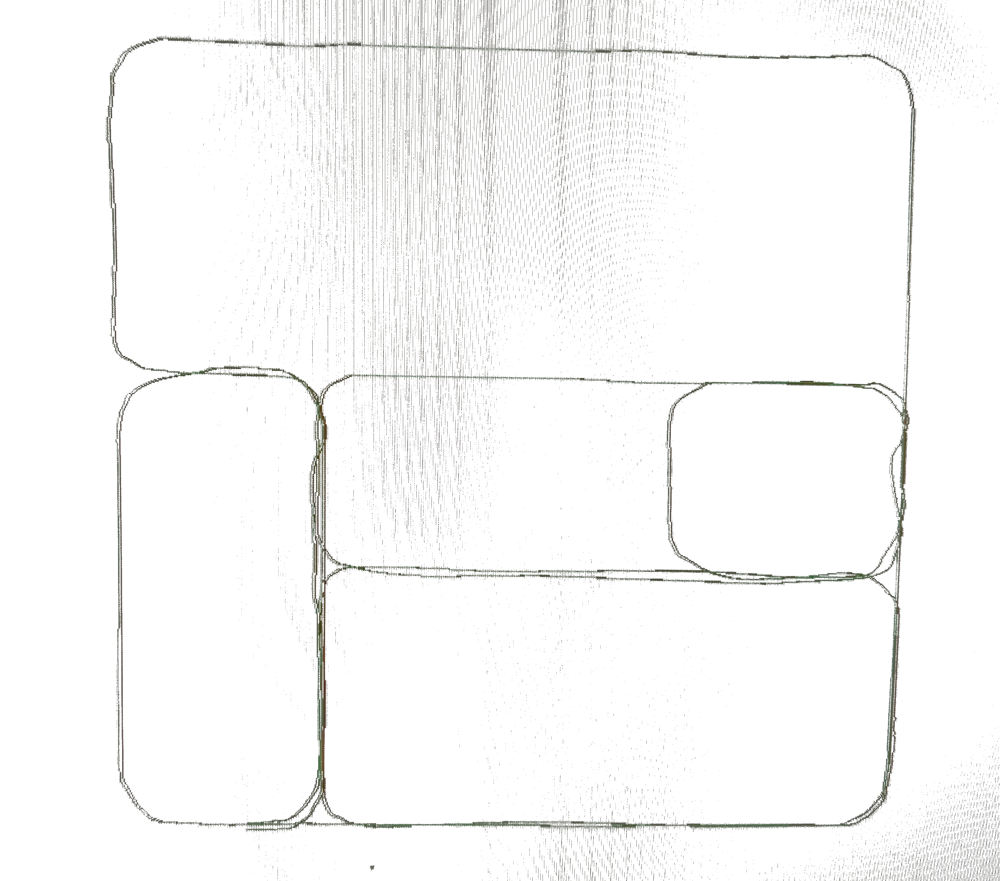
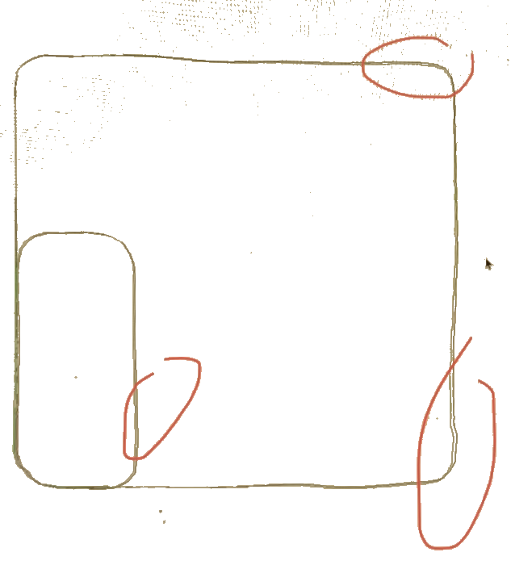
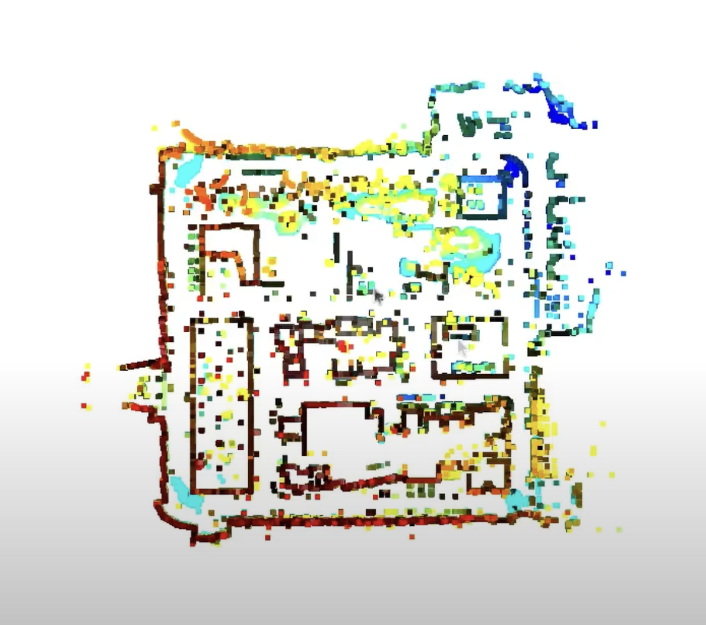

Projects
Autonomous Vehicle Lidar SLAM Pipeline
While many resources exist for lidar odometry, SLAM, and map-based localization, packages that combine accurate localization and mapping functionality into a cohesive ROS2 node collection are few and far between. For the NOVA group at UT Dallas, the need for such a package was driven by a desire for ease of mapping and accurate localization based on an incrementally built, highly accurate global map.
Step 1: Offline Localization Tool
I initially approached this project with static, debuggable python scripts that would process pre-recorded rosbag files and return estimated trajectories overlayed on the ground-truth trajectory. In this manner, I was able to test localization accuracy with plain lidar odometry as opposed to map-based localization.
Basing my solution for map-based localization off the KISS-ICP library, I augmented the dynamic local map functionality with a static map option, modifying the Python and C++ library code so a pointcloud can be passed into the system on initialization.




Step 2: Online Localization Node
Porting the localization code from static python files to ROS2 nodes was relatively straightforward. After the Carla simulator environment was configured for the new node and visualization was setup to listen to the localized pose message, a real-time pose estimate was reported on-screen for comparison with ground truth.
On the left are visualizations demonstrating the accuracy of the KISS_ICP-based localization node. This version of the node relied on Open3D's feature-based global registration to achieve an initial pose estimate, which was then passed to KISS_ICP for refined odometry using the pre-mapped point cloud.
Step 3: Online Mapping Node
The KISS_SLAM pipeline presents a high-fidelity mapping solution that can be run on rosbags of pre-collected lidar scans. However, the separate actions of recording Rosbags and then running the KISS_SLAM pipeline on them could be consolidated into a single process, with KISS_SLAM configurations managed by the mapping node to avoid variation in output.
A key requirement for this node was an accurate initial pose, considering that although KISS_SLAM guaranteed high fidelity within the output map, the alignment with the world coordinate frame had to be ensured. This was done by depending on two consecutive high-accuracy GPS positions to determine initial position and orientation.

Step 4: GPS approximation and Map Addition
A problem that quickly presented itself as the mapping and localization system was tested was the issue of global registration on a prohibitively large global map. To minimize the search area, an inaccurate GPS reading was used to first crop the global map to a padded area around the GPS coordinate. The same feature-based registration system was used, but a reduced search area reduced registration time and increased accuracy significantly, while maintaining the margin of error with a large buffer added to each dimension of the cropped cloud.
This method also proved highly useful for the map addition functionality, a feature that allowed for the continuation of an existing map by matching current pose within the already-mapped portion, then adding the next scans with a custom KISS_SLAM variant capable of completing map closures on an initial input pointcloud as well as the dynamically built pointclouds.
Full Demo
In all, 1 mapping node, 2 localization nodes (one with global registration, one with cropping method), and 3 map addition nodes (one with global registration, one with gps cropping, and one depending on high-accuracy gps) were developed, providing ample options for various data availability scenarios.
Coursework
gurting gurting gurting gurting gurting gurting gurting gurting gurting gurting gurting gurting gurting gurting gurting gurting gurting gurting gurting gurting gurting gurting gurting gurting gurting gurting gurting gurting gurting gurting gurting gurting gurting gurting gurting gurting gurting gurting gurting gurting gurting gurting gurting gurting gurting gurting gurting gurting gurting gurting gurting gurting gurting gurting gurting gurting gurting gurting gurting gurting gurting gurting gurting gurting gurting gurting gurting gurting gurting gurting gurting gurting gurting gurting gurting gurting gurting gurting gurting gurting gurting gurting gurting gurting gurting gurting gurting gurting gurting gurting gurting gurting gurting gurting gurting gurting gurting gurting gurting gurting gurting gurting gurting gurting gurting gurting gurting gurting gurting gurting gurting gurting gurting gurting gurting gurting gurting gurting gurting gurting gurting gurting gurting gurting gurting gurting gurting gurting gurting gurting gurting gurting gurting gurting gurting gurting gurting gurting gurting gurting gurting gurting gurting gurting gurting gurting gurting gurting gurting gurting gurting gurting gurting gurting gurting gurting gurting gurting gurting gurting gurting gurting gurting gurting gurting gurting gurting gurting gurting gurting gurting gurting gurting gurting gurting gurting gurting gurting gurting gurting gurting gurting gurting gurting gurting gurting gurting gurting gurting gurting gurting gurting gurting gurting gurting gurting gurting gurting gurting gurting gurting gurting gurting gurting gurting gurting gurting gurting gurting gurting gurting gurting gurting gurting gurting gurting gurting gurting gurting gurting gurting gurting gurting gurting gurting gurting gurting gurting gurting gurting gurting gurting gurting gurting gurting gurting gurting gurting gurting gurting gurting gurting gurting gurting gurting gurting gurting gurting gurting gurting gurting gurting gurting gurting gurting gurting gurting gurting gurting gurting gurting gurting gurting gurting gurting gurting gurting gurting gurting gurting gurting gurting gurting gurting gurting gurting gurting gurting gurting gurting gurting gurting gurting gurting gurting gurting gurting gurting gurting gurting gurting gurting gurting gurting gurting gurting gurting gurting gurting gurting gurting gurting gurting gurting gurting gurting gurting gurting gurting gurting gurting gurting gurting gurting gurting gurting gurting gurting gurting gurting gurting gurting gurting gurting gurting gurting gurting gurting gurting gurting gurting gurting gurting gurting gurting gurting gurting gurting gurting gurting gurting gurting gurting gurting gurting gurting gurting gurting gurting gurting gurting gurting gurting gurting gurting gurting gurting gurting gurting gurting gurting gurting gurting gurting gurting gurting gurting gurting gurting gurting gurting gurting gurting gurting gurting gurting gurting gurting gurting gurting gurting gurting gurting gurting gurting gurting gurting gurting gurting gurting gurting gurting gurting gurting gurting gurting gurting gurting gurting gurting gurting gurting gurting gurting gurting gurting gurting gurting gurting gurting gurting gurting gurting gurting gurting gurting gurting gurting gurting gurting gurting gurting gurting gurting gurting gurting gurting gurting gurting gurting gurting gurting gurting gurting gurting gurting gurting gurting gurting gurting gurting gurting gurting gurting gurting gurting gurting gurting gurting gurting gurting gurting gurting gurting gurting gurting gurting gurting gurting gurting gurting gurting gurting gurting gurting gurting gurting gurting gurting gurting gurting gurting gurting gurting gurting gurting gurting gurting gurting gurting gurting gurting gurting gurting gurting gurting gurting gurting gurting gurting gurting gurting gurting gurting gurting gurting gurting gurting gurting gurting gurting gurting gurting gurting gurting gurting gurting gurting gurting gurting gurting gurting gurting gurting gurting gurting gurting gurting gurting gurting gurting gurting gurting gurting gurting gurting gurting gurting gurting gurting gurting gurting gurting gurting gurting gurting gurting gurting gurting gurting gurting gurting gurting gurting gurting gurting gurting gurting gurting gurting gurting gurting gurting gurting gurting gurting gurting gurting gurting gurting gurting gurting gurting gurting gurting gurting gurting gurting gurting gurting gurting gurting gurting gurting gurting gurting gurting gurting gurting gurting gurting gurting gurting gurting gurting gurting gurting gurting gurting gurting gurting gurting gurting gurting gurting gurting gurting gurting gurting gurting gurting gurting gurting gurting gurting gurting gurting gurting gurting gurting gurting gurting gurting gurting gurting gurting gurting gurting gurting gurting gurting gurting gurting gurting gurting gurting gurting gurting gurting gurting gurting gurting gurting gurting gurting gurting gurting gurting gurting gurting gurting gurting gurting gurting gurting gurting gurting gurting gurting gurting gurting gurting gurting gurting gurting gurting gurting gurting gurting gurting gurting gurting gurting gurting gurting gurting gurting gurting gurting gurting gurting gurting gurting gurting gurting gurting gurting gurting gurting gurting gurting gurting gurting gurting gurting gurting gurting gurting gurting